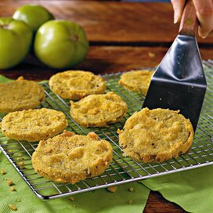
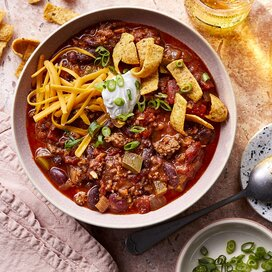

Fried Green Tomatoes
Fried Green Tomatoes like Southern Living. The cornmeal and flour crust is what sets this recipe apart from others.

Bourbon-Glazed Salmon
I created this recipe after tasting the bourbon salmon from my local grocery seafood counter. Mine has received rave reviews.

Easy Chili
Add chili to your next barbeque to top grilled sausages for an upgraded version of chili dogs. You can easily substitute ground turkey .